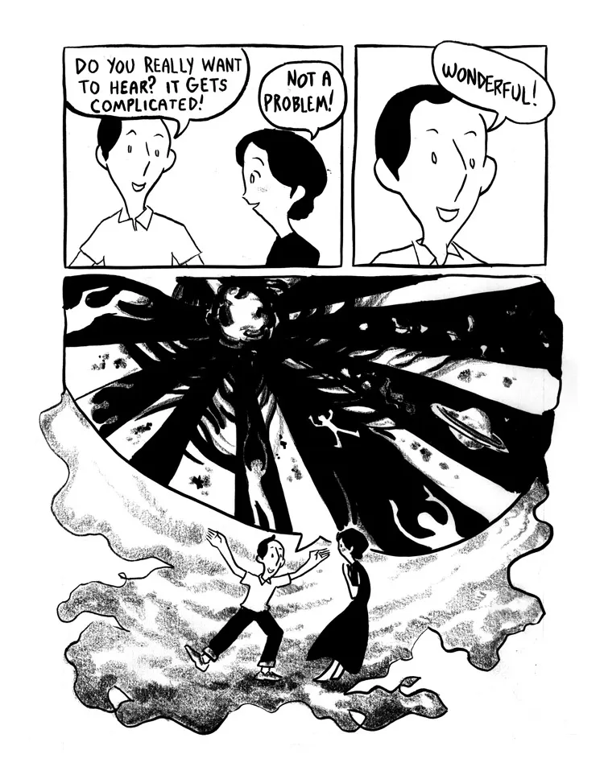

I am an Assistant Professor at the University of Vermont and Assistant Research Fellow at Academia Sinica. My work is primarily in gauge theory and low-dimensional topology. I received my Ph.D. in topology from UCLA; my advisor was Ciprian Manolescu.
My surname is Miller Eismeier, with a space.
Every homotopy K3 surface has total Seiberg--Witten invariant equal to 1 mod 2. We exhibit a similar phenomenon over the integers, provided that the 4-manifold admits a separating hypersurface of a specific type, with the 3-torus as a main example. The key idea is to relate the invariant to an induced map on the reducible-only part of the theory, whose leading order term can be computed explicitly.
This monograph develops analysis of instanton moduli spaces and presents algebra related to the equivariant (co)homology of differential graded algebras and their modules. This is used to define four invariants of rational homology spheres, related in a way similar to the flavors of Heegaard Floer homology.
We show that the reducible-only part of monopole Floer homology (HM-bar, equivalent to HF-infinity) can be computed explicitly in terms of the triple cup product and combinatorial algebra. This is established by using an identification with twisted homology, defining characteristic classes for twisting sequences, and computing them in the case of interest. In a separate note available on this webpage, I point out that this leads to a counterexample to a conjecture of Oszvath-Szabo.
We prove there exist infinitely many 3-manifolds which do not embed into any closed symplectic 4-manifold. For this purpose, it is enough to find L-spaces which do not bound definite manifolds of either sign. Though not phrased this way, the main contribution is computing a generalization of Daemi's Gamma invariant for rational homology spheres.
d-invariants of 3-manifolds are a family of rational numbers, indexed by spin^c structures. I observe that the Fourier transform is well-behaved under connected sum; in some cases one is able to recover the d-invariants of summands from those of the sum. This leads to a strong homology cobordism invariance for connected sums of lens spaces.
The key point of the paper "Fourier transforms and integer homology cobordism" is that, in a product of cyclic groups, knowing the union of the coordinate axes means you know the direct sum decomposition. This paper handles the more complicated case where one only knows the union of the coordinate hyperplanes. A similar statement holds, except that one has to be careful with Z/2 summands.
We show that Froyshov's invariant q3 is intimately related to the dimension of framed instanton homology for knot surgeries, with F2 coefficients. This leads to some surprising and pleasant applications. This preprint depends in an essential way on my forthcoming work with Ali Daemi and Xingpei Liu, which proves some foundational properties of q3.
Continuing on my work with Francesco Lin, we investigate HM-bar for the product of a surface and a circle. This is related to the action of powers of the symplectic form on Lambda^*(Z^2g), so we develop tools to understand the Lefschetz decomposition into primitive subspaces over the integers. We verify Ozsvath and Szabo's conjecture for this class of manifolds by hand, but also show that there is no
The cosmetic surgery conjecture asserts that distinct surgeries on a knot are never oriented homeomorphic. This has been reduced to the case of slopes r, s with |r| = |s| and r one of 2, 1, 1/2, ... We show that for a non-trivial knot, the filtered instanton Floer homologies of 1/n and 1/m are never equivalent for integers n =/= m, reducing the cosmetic surgery conjecture to the final case of slopes ±2. There are three main ideas: using filtered Floer homology as a diffeomorphism invariant, using surgery exact sequences (including a distance-two triangle) to compare filtered Floer homology groups, and using maps which are typically not chain maps in this comparison.
We promote equivariant instanton homology with all coefficients to a functor on the negative-definite cobordism category, and give an extension of Taubes' Casson invariant to rational homology spheres. In particular, this shows that equivariant instanton homology is independent of the auxiliary data used in its construction. The main contribution is the definition of cobordism maps associated to mildly obstructed cobordisms. The relevant construction is expected to have several other applications.
Frøyshov has introduced an invariant q3 of integer homology spheres. In this paper, we generalize its definition to rational homology spheres and show it provides lower bounds on the size of the intersection form of a cobordism.
This book introduces a small cellular model for SO(3)-equivariant homology and uses this to produce a concrete connected-sum theorem and applications. It is written beginning from a general perspective and specializing as needed, and intended for an audience of researchers and graduate students. The hope is that it may serve as an introduction to recent literature in the subject.
There is an explicit example of a 3-manifold with b1(Y) = 12 for which the spectral sequence from cup homology to HF^oo(Y) does not collapse, even with F2 coefficients. The latter is computed using the formula from "Monopoles, twisted integral homology, and Hirsch algebras", which reduces the work to a short computation in Sage. I doubt this counterexample is minimal.
This short note establishes that the minimal Euler characteristic over all closed, oriented 4-manifolds with a given fundamental group differs depending on whether one minimizes over topological or smooth manifolds.

Image of an excited mathematician by Ryan Armand.